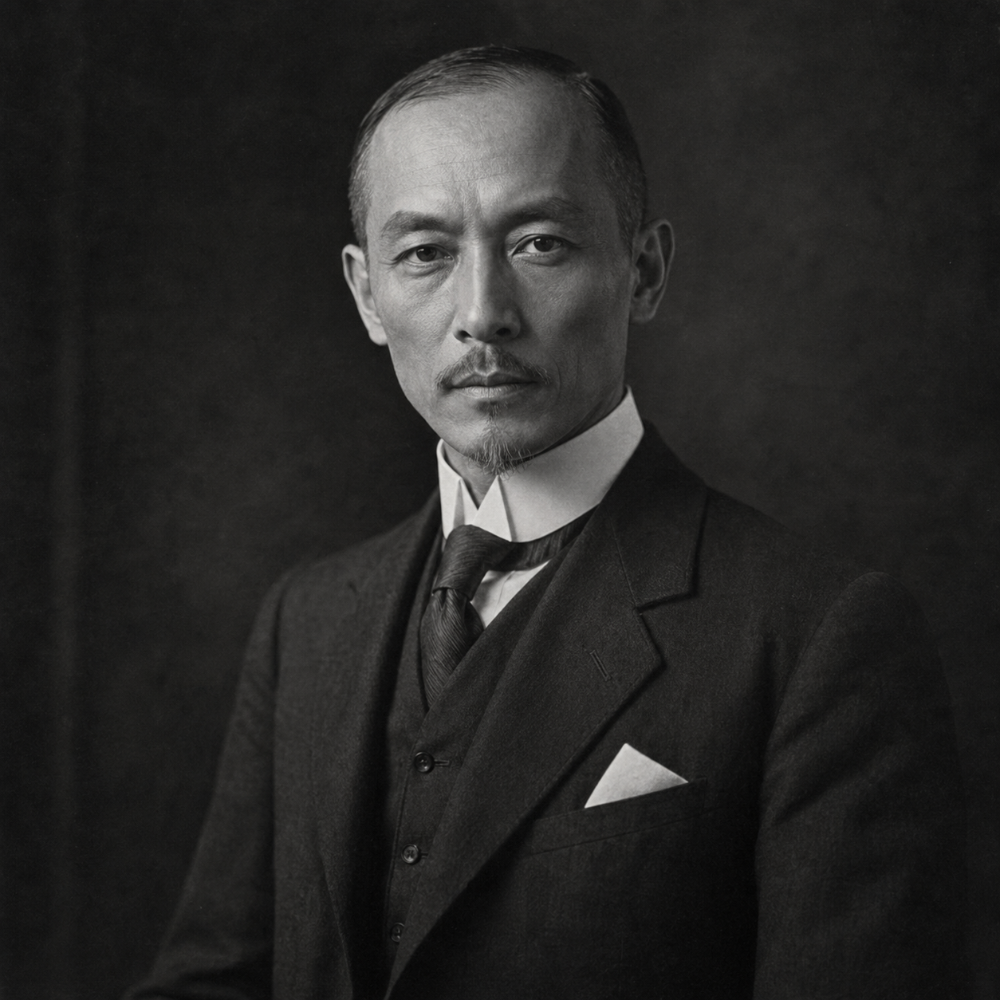

Lucien Wei Mercier
(375 Points)
Male; Age 34; 5'10", 160 lbs.
| ST: 10/12 [0] | IQ: 15 [60] | Speed: 7.75 |
| DX: 19 [150] | HT: 12/10 [20] | Move: 7 |
| Dodge: 9 | Parry: 15 |
Advantages
Ambidexterity [10]; Combat Reflexes [15] (Fright Check: 19); Double-Jointed [5]; Enhanced Dodge [15]; Enhanced Parry (Bare Hands) [6]; High Pain Threshold [10]; Lang: Chinese (Cantonese) (Native Spoken/Accented Written) [5]; Lang: Chinese (Mandarin) (Accented Spoken/Accented Written) [4]; Lang: English (Native) [0]; Lang: French (Native Spoken/Native Written) [6]; Patron (Followers of the Right Hand) (15 or less) [60] (Equipment: Standard, +5; Special Qualities (Access to Magic in Non-magical World): Very Unusual, +10; Secret: -5; Subtraction (Minimal Intervention): -5); Perfect Balance [15] (DX+6 on slippery surfaces. DX+4 to keep on feet in combat); Reputation +1 (Elegant fighter and cosmopolitan gentleman, among martial and underworld circles) [2] (Reaction: +1; Recognized by: Large class, ×½); Strong Will +2 [8] (Will: 17); Trained By A Master [40].
Disadvantages
Code of Honor (Gentleman-Martialist) [-10]; Duty (15 or less) [-25] (Involuntary: -5; Subtraction (Extremely Hazardous): -5); Enemy (Unknown Enemies of FRH) [-60] (Unknown: -5; Subtraction (Access to Magic in Non-magical World): -15); Overconfidence [-10]; Second Class Citizen (Asian presenting in the 1920s West) [-5] (Reaction: -1); Secret (Chi-supernormal in a non-magical world) [-20]; Sense of Duty (Companions and Innocents) [-10]; Weirdness Magnet [-15].
Quirks
Always Dresses Precisely; Dislikes Firearms; Keeps Tea Implements In His Luggage; Polite Even In A Duel; Will Not Waste Food. [-5]Skills
Acrobatic Kick (1d+2)-15 [0]; Acrobatics-19* [4]; Area Knowledge (Marseille)-15 [1]; Area Knowledge (San Francisco)-15 [1]; Area Knowledge (Shanghai)-15 [1]; Arm Lock (Judo)-20 [0]; Back Kick (1d+2)-16 [0]; Blind Fighting-14 [4]; Body Language-14 [2]; Boxing-19 [2] (Parry: 14); Broadsword-19 [2] (Parry: 10); Cat Stance-17 [0]; Climbing-19* [1]; Close Combat (Long Weapon) (Fencing (Smallsword))-14 [0]; Corps-à-Corps-20 [0]; Diplomacy-14 [2]; Driving/TL6 (Automobile)-17 [½]; Drunken Fighting-18 [2]; Elbow Strike (1d)-18 [0]; Escape-18* [1½]; Fast-Draw (Main-Gauche)-21* [2]; Fast-Draw (Smallsword)-21* [2]; Fast-Draw (Sword)-21* [2]; Feint (Karate)-20 [0]; Feint (Fencing (Smallsword))-20 [0]; Fencing (Smallsword)-20 [4] (Parry: 14); Fencing Art-19 [1½] (Parry: 13); Flèche-17 [0]; Flying Jump Kick (1d+4)-14 [0]; Flying Leap-16 [6]; Ground Fighting (Judo)-16 [0]; History (Chinese)-13 [1]; History (French)-13 [1]; Hit Location (Eye) (Karate)-17 [0]; Hit Location (Hand) (Fencing (Smallsword))-17 [0]; Hypnotic Hands-14 [2]; Hypnotism-13 [1]; Jab (1d-2)-17 [0]; Judo-20 [8] (Parry: 15); Jump Kick (1d+4)-16 [0]; Jumping-20 [2]; Karate-20 [8] (Parry: 15); Karate Art-18 [1] (Parry: 14); Kicking (1d+2)-18 [0]; Knee Strike (1d+1)-19 [0]; Light Walk-14 [2]; Lunge-18 [0]; Main-Gauche-18 [1] (Parry: 13); Meditation-13 [2]; Mental Strength-15 [1]; Merchant-14 [1]; Off-Hand Weapon Training (Fencing (Smallsword))-16 [0]; Philosophy (Taoism)-13 [1]; Power Blow-15 [4]; Pressure Points-16 [6]; Pressure Secrets-13 [2]; Push-18 [2]; Riposte (Karate)-16 [0]; Riposte (Fencing (Smallsword))-16 [0]; Roll with Blow-17 [0]; Savoir-Faire-15 [1]; Savoir-Faire (Dojo)-15 [1]; Savoir-Faire (French Culture)-15 [1]; Savoir-Faire (Salle)-15 [1]; Spear-18 [1] (Parry: 10); Spin Kick (1d+2)-17 [0]; Staff-20 [7½] (Parry: 14); Stealth-18 [1]; Sticking-16 [0]; Stop Hit-16 [0]; Sweeping Kick-17 [0]; Tactics-14 [2]; Two-Handed Sword-18 [1] (Parry: 10).
*Cost modifiers: Perfect Balance, Double-Jointed, Combat Reflexes.
Description
Lucien Wei Mercier was built for discipline before he was built for wonder. He moves through the world with the polished inevitability of a man whose body, manners, and attention have all been trained to answer the same command at once. He is multilingual, impeccably balanced, weapon-fast, and socially exact, the sort of person who can enter a room already carrying enough refinement to make most men decide they have misjudged their own posture. That polish is part French, part Chinese, part cosmopolitan survival, and part the old martial truth that elegance can be more intimidating than brute force if it is backed by enough exactness.The early temptation with Lucien was to make him too broad, too much of a four-color chi-master who could be everything at once. The better version of him is narrower and more dangerous. Lucien is terrifying because he is focused. He does not merely fight well; he becomes most frightening when he has had one breath, one beat, one moment to settle into control. His miracles are not casual. They are the flowering of preparation, composure, and impeccable timing. That keeps him human enough to remain interesting and strange enough to imply a much larger martial-metaphysical world standing just offstage.
That wider world matters because Lucien carries more than physical skill. He carries etiquette, codes, hidden lineages of discipline, and the social ability to disarm people before he ever has to disarm their weapons. His refinement is not the opposite of danger. It is the shape danger has taken inside him. Weirdness still follows him, which is part of why he belongs in FRH rather than in a cleaner pulp universe where excellence is reward enough. His gift does not free him from the uncanny; it makes the uncanny arrive dressed well.
For a new player, Lucien should feel almost superhuman without ever becoming merely a glamorous answer to every problem. He is a disciplined chi-master, frightening when calm, socially polished, and always one step away from implying a larger and stranger scale than the room may be ready to contain.